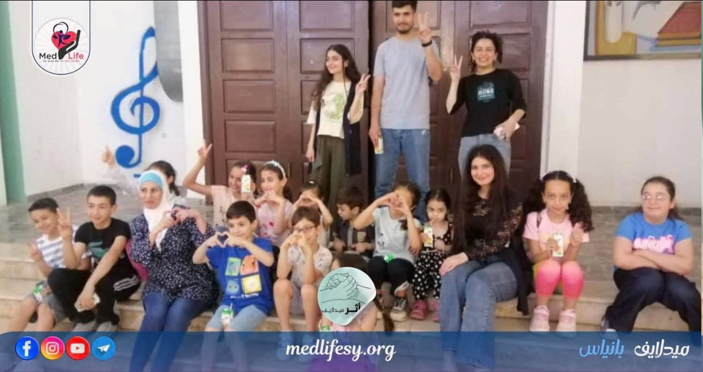
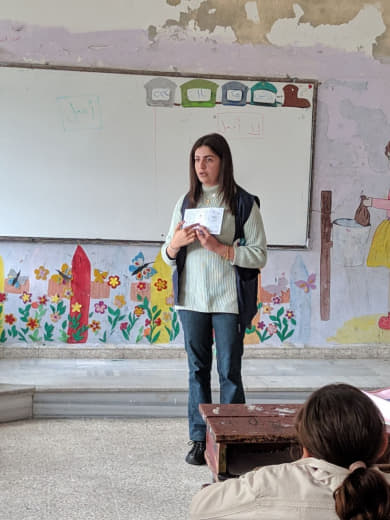
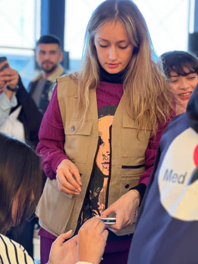
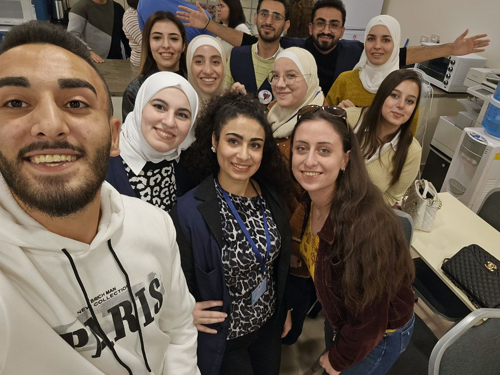
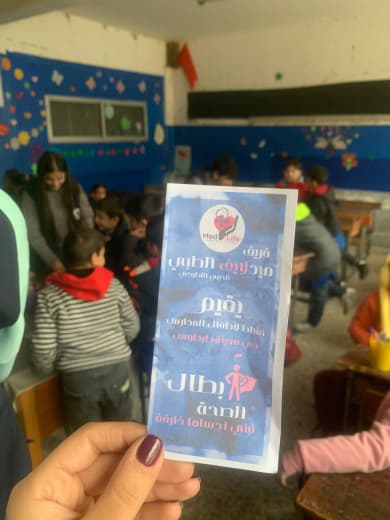
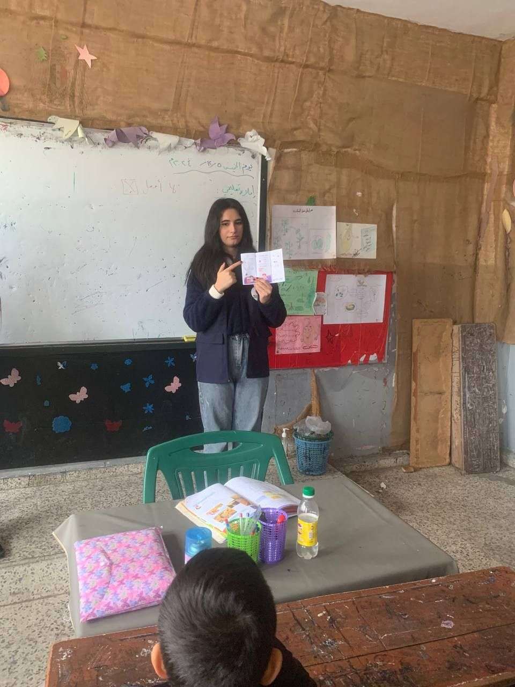

مؤسسة ميدلايف
الطبية الخيرية التطوعية
صحةتطوعتوعيةإنسانية
نحوّل المعرفة الطبية والعمل التطوعي إلى مبادرات وخدمات ذات أثر حقيقي، ونعمل مع المجتمع والمتطوعين والشركاء لبناء مستقبل صحي أكثر إنصافاً.
ميدلايف مؤسسة سورية تعمل على وصل المعرفة الطبية بالخدمة المجتمعية والعمل التطوعي.
الطبية الخيرية التطوعية
المساهمة في بناء مجتمع أكثر وعياً صحياً من خلال نشر المعرفة الطبية، تنفيذ المبادرات الصحية والإنسانية، دعم المحتاجين، وبناء قدرات المتطوعين.
نؤمن أن الأثر الصحي لا يبدأ دائماً من المستشفى؛ قد يبدأ من معلومة صحيحة، أو متطوع مدرّب، أو مبادرة تصل إلى شخص يحتاجها في الوقت المناسب.
مجالات متكاملة تجمع الخدمة الطبية، التوعية، التدريب، والعمل الإنساني والمجتمعي.
مبادرات واستشارات وفحوصات صحية وفق البرامج والإمكانات المتاحة.
محتوى وفعاليات تساعد الأفراد والمجتمعات على اتخاذ قرارات صحية أفضل.
بناء مهارات المتطوعين والكوادر وتعزيز التعلم الطبي والمجتمعي.
الوصول إلى الأشخاص الأكثر حاجة عبر مبادرات دعم موثقة ومنظمة.
برامج توعوية وأنشطة داعمة للأطفال والبيئات التعليمية.
تنظيم المتطوعين والشراكات المحلية وتحويل الطاقات إلى أثر قابل للقياس.
تعرّف على الحالات والمشاريع التي تحتاج إلى دعم، واطلع على المبلغ المطلوب والمؤمّن والوثائق التي تمت مراجعتها قبل النشر.
صور من الحملات والأنشطة والمبادرات التي نصنع من خلالها أثراً حقيقياً.






مساحات رقمية تساعدك على المشاركة والمعرفة والتواصل.
محتوى طبي وتوعوي يقدمه فريق ميدلايف.
استكشف المقالات ←مساحة للطلاب والأطباء والمتطوعين والمبادرات.
زيارة المنتدى ←شارك بوقتك وخبرتك ومهاراتك ضمن مجتمع ميدلايف.
اعرف خيارات الانضمام ←للاستفسارات والشراكات والمبادرات والدعم.